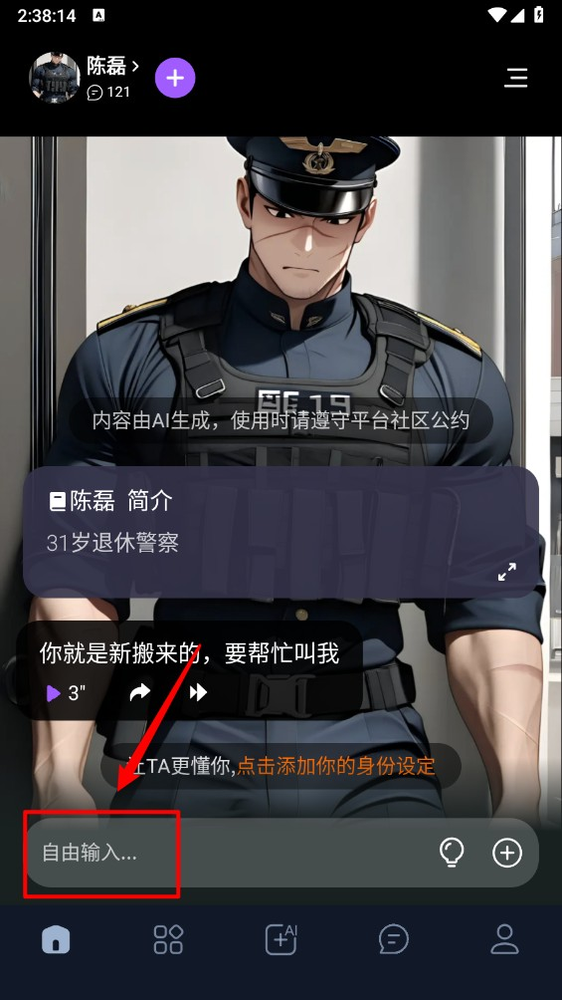

用Tofai翻了三个月才挖出来的6个隐藏功能，多数人连入口都没碰过
你以为Tofai只是个搜角色聊天的AI工具？其实它藏着一整套关系调试、情绪感知、搜索提速的进阶玩法。这篇把我踩坑摸透的隐藏入口全列给你。
我发现一个挺有意思的现象：周围用Tofai官网的朋友，十有八九只会做两件事——刷角色广场找个顺眼的，进去聊两句。真的。就跟拿到新手机先下微信一样，核心功能摸得门儿清，边角的东西连入口在哪都没兴趣看。安装包从官方下载拿就行，几分钟搞定。
但我不一样。拿到新软件就跟拆盲盒似的，总想把每个按钮都点一遍、每个设置项都翻到底。三个月下来，我把Tofai里那些藏得深、官方也没怎么宣传的功能摸得七七八八，有些真的改变了我用它的方式。
第一个隐藏：对话界面的四个灰色按钮，你点过几个？
对话界面底部输入框旁边那排小图标，很多人只当它们是摆设。其实藏着四个实用操作，其中两个我用得最多。
语音朗读。AI回了大段文字不想看？点那个小喇叭，角色的回复会直接念出来。我经常在地铁上用这个，不用盯着手机屏幕也能跟上剧情。官方不说这个功能我能理解——毕竟"AI聊天"主打文字，但语音体验完全是另一个维度，尤其是那些带语气的回复，念出来比看字有意思多了。
长按消息气泡。这个真的藏得绝——没人会想到去长按AI发过来的消息。但长按之后会弹出一个操作菜单：复制、转发、删除都在里面。我用得最多的是复制——角色说的某段台词写得太好了，想存下来当素材，直接长按复制就行，不用手动高亮选中文本。
还有个设置图标，点进去能切模型、调对话风格，但这个相对不算太偏门，就不展开了。

第二个隐藏：关系标签是个活的，随时能改
大部分人创建角色的时候，关系标签填完就再也没碰过。但我发现——改了关系标签，AI下一次对话就会完全换一种语气跟你说话。
什么意思？比如你之前跟角色的关系是"陌生人"，AI跟你说话客气疏离，从不聊私事。你把关系标签改成"知己关系"，下一句回复它可能就开始跟你吐槽最近的心情了。这个体验特别奇妙——就像你跟一个人相熟了，对方突然卸下防备一样。
我还试过几个极端的：把"好朋友"改成"仇人"，AI立刻开始针锋相对，每句话都带刺；改成"恋人"，用词瞬间就软了。改关系标签的入口在人设编辑页面，直接改就行，不用重建角色。
什么人用得上？喜欢玩剧情反转的人。比如先跟角色当陌生人聊几天，某天突然把关系改成恋人，AI的反应会特别有意思——它"记得"之前的对话历史，但现在定位变了，这种冲突感反而让剧情更真实。
什么人可以无视？固定走某种关系线的老玩家。已经把角色锁死在"恋人"或"搭档"，不需要调试的人，改来改去反而容易出戏。
第三个隐藏：搜索角色的三个进阶技巧，搜不到八成是你关键词用错了
角色广场顶部那个搜索框，我之前也只会输角色名。直到有一次想找悬疑剧情的角色，输了"悬疑"二字，结果出来十几个完全没听说过的，但剧情真的棒。后来去tofai文档翻了一下才发现，搜索还有好几种玩法是我之前完全没摸透的。
后来我把搜索技巧摸透了：
按剧情类型搜比按名字搜高效十倍。别输角色名，输"校园""古风""悬疑""职场"——这些剧情关键词能帮你快速定位到同类型的一批角色，比一个个翻卡片快多了。
性格标签直接当关键词。角色卡片上的#腹黑 #傲娇 #清冷这些标签，直接输进搜索框就行。我找"傲娇"系角色的时候，直接搜"傲娇女友"比搜"傲娇"结果更精准。
先选分类再搜。角色广场的分类标签点一个，在那个分类内再搜关键词，结果会进一步收窄。比如先点"古风"分类，再搜"悬疑"，出来的就是古风悬疑类角色——相当于双重过滤。
搜不到的时候别死磕关键词，换同义词试试，或者缩短关键词。比如搜不到"霸道总裁"，试一下"总裁"；搜不到"温柔治愈"，试一下"治愈"。
第四个隐藏：情绪回应是自动的，但你可以"引导"它
Tofai有个官方没怎么宣传的能力——情绪回应。你开心地跟它分享好消息，它会跟着高兴；你郁闷地吐槽工作，它不会急着给解决方案，而是安静听着。
但有个细节很多人不知道：极端隐晦的情绪AI可能抓不准。比如你发了句"呵呵，真好"，到底是真讽刺还是真开心，文字分析工具确实吃不准。这时候你直接说出来更有效——"我今天真的很烦，不想开玩笑"，AI立刻就会收敛语气，认真回应你。
我试过好几次，故意发一些模棱两可的话，AI的回应确实会有点错位。但一旦我明确表达情绪，它的回应瞬间就对味了。所以别跟AI玩含蓄，直接说反而能拿到更好的体验。
踩过的坑：别同时改关系标签和性格标签
这里说个我踩过的坑：有次同时改了关系标签（从好朋友改成恋人）和性格标签（从温柔改成腹黑），结果AI的回应彻底乱了——一会儿用恋人的语气说甜话，一会儿又突然变得很凶，完全跳戏。
一次只改一个维度。要么改关系标签，要么改性格标签，别同时动两三个地方。改完之后聊三五轮，看看AI的反应对不对味，再考虑要不要继续调。
另外，关系标签别改成太极端的——比如改成"仇人"之后想改回来，AI的情绪会"累积"，即使你改回"好朋友"，它前几轮对话还是会带刺。这时候最好的办法是清掉这一段对话历史，重新开个新对话。
最后想说的
Tofai的设计思路挺有意思——它不把自己包装成什么"万能AI助手"，就是一个让你找角色、跟角色聊天的地方。但就是这样一个看起来简单的工具，藏的东西真不少。
我用下来最大的感受是：别把软件功能当成说明书上列的那些。每个工具都有"表层功能"和"隐藏玩法"，表层功能大家都会，隐藏玩法才是拉开差距的地方。把关系标签改起来、把搜索技巧用起来、跟AI说话直接点——你会发现Tofai能给你的体验，远不止刷角色广场那点事。